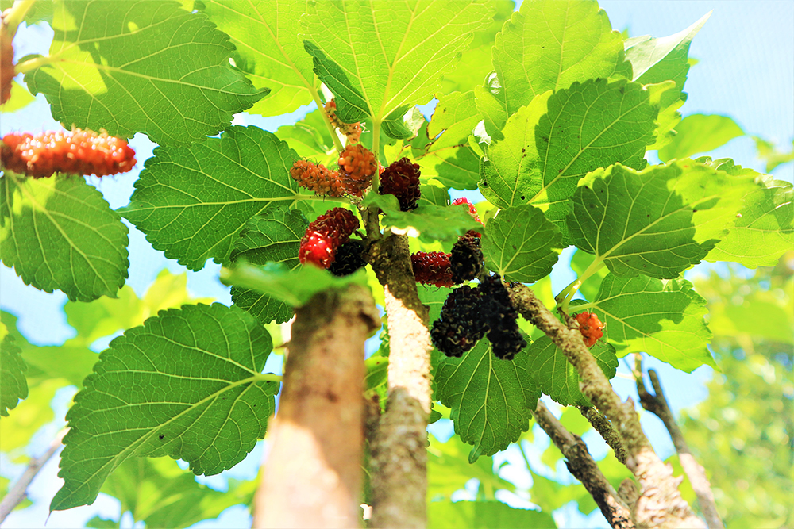
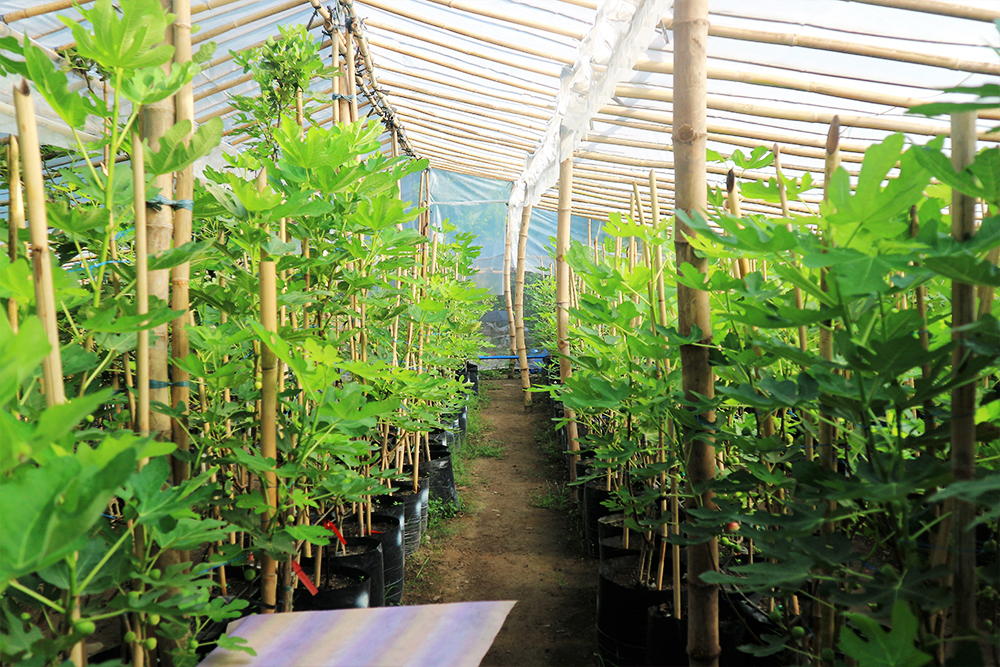
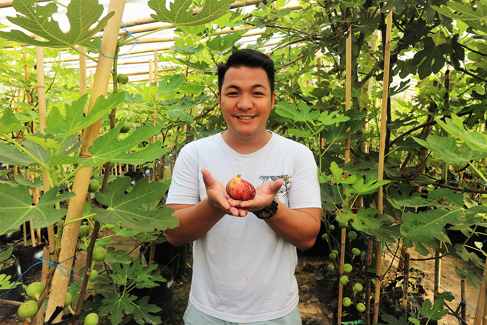
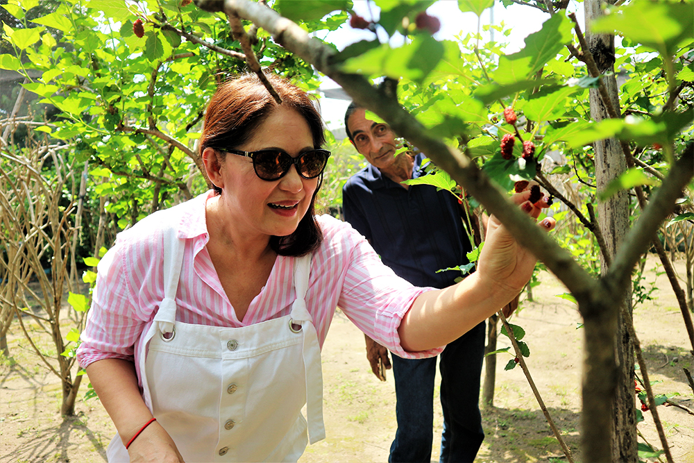
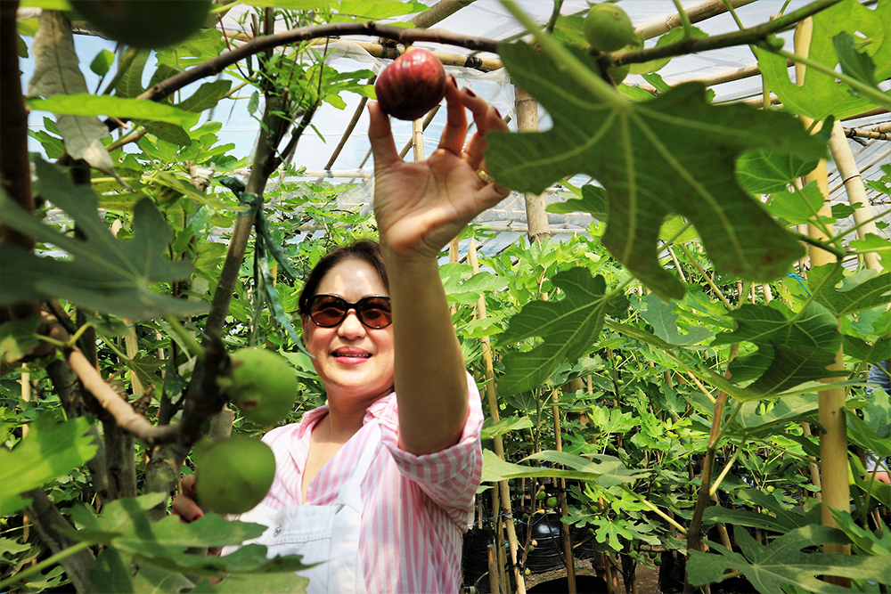
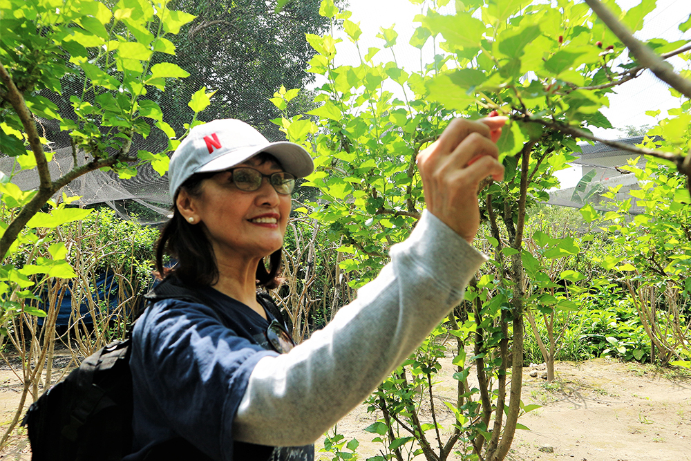
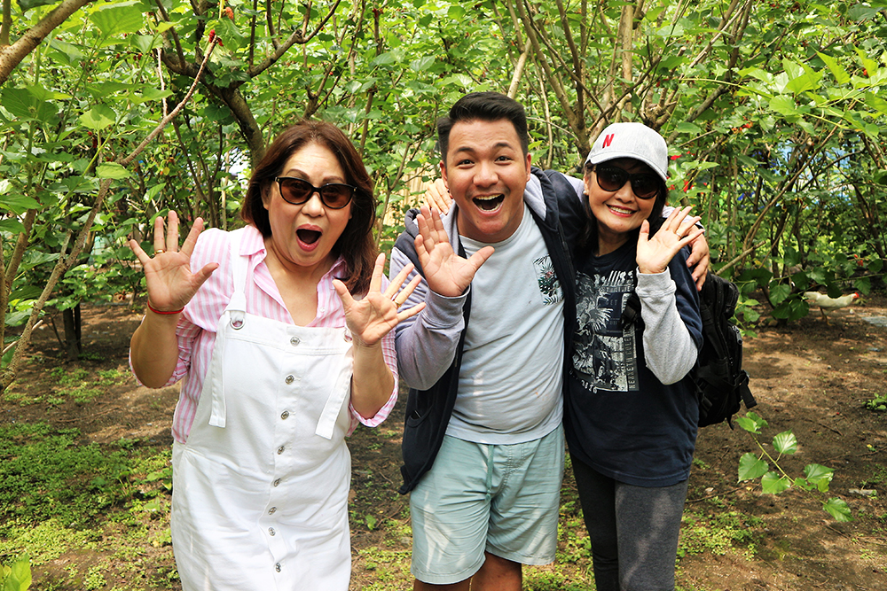
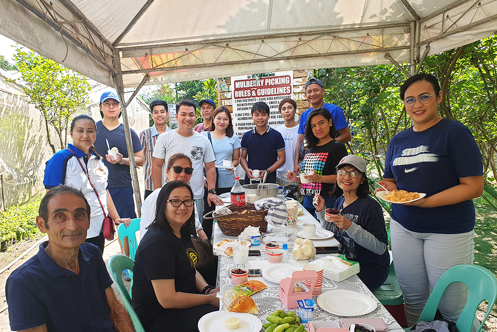
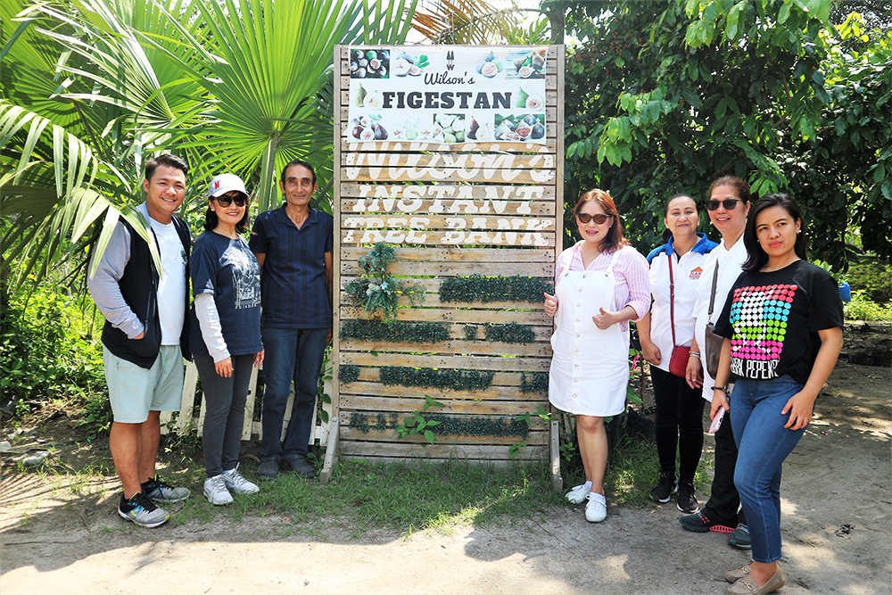

Chef Vince' Blogs
CHEF VINCE GARCIA CULINARY GROUP PREPARED 250K WORTH OF FOOD PACKS FOR FRONTLINERS IN PAMPANGA
May 13, 2020Nearly two months after launching the ‘Cook for Heroes’ campaign, this Kapampangan chef, the president ..
Read more
EN CROUTE CAFE OFFERS DELIVERY AND PICK-UP ORDERS
May 7, 2020En Croute Cafe is a high-class cafe under the name of Chef Vince Garcia Culinary Group in Metro Clark that ..
Read more
RAINFOREST KICHENE OFFERS TAKE OUT ORDERS
May 2, 2020Rainforest Kichene, the Food Haven of Pampanga, is widely known for its famous Salt Crusted Lechon Belly, USDA...
Read more
LOVE LOCAL. PROMOTE LOCAL. SUPPORT LOCAL
With enthusiasm and excitement, Chef Vince Garcia welcomed his colleagues and friends in a recently held Mulberry and Fig Picking activity last July 6, 2019 at Wilson’s Instant Tree Bank, City of San Fernando, Pampanga.

Chef Vince and his friends Department of Tourism Regional Director Caroline De Guzman Uy, Former Subic-Clark Alliance for Development Director Linda Pamintuan, City of San Fernando Tourism Officer Ching Pangilinan, Hotels and Restaurants Association in Pampanga President Fatima Orfinada, Pick and Go Meat Shop Corporation Lorenzo Garcia, and iOrbit News Online writer Larrica Angela were very amazed and eager to pick mulberries and figs at the figestan. Everyone was surprised to see rows and rows of these plant species thriving in this part of the city.


Wilson Aboujafarib, plant scientist and farm owner, shared that he planted the first grafted fig in the country in the 1980s. At that time Filipinos did not yet fully know the health benefits of the fruits. Through the years, Wilson brought to the city 90 superior varieties of figs from Australia, USA, Europe, Middle East, Africa and Malaysia. Meanwhile, the mulberries are of Illinois, Himalayan White, Turkish Pink and Turkish White varieties. At present, his figestan has three giant green houses with thousands of fig and mulberry trees ready for release.
Figs have lots of nutrients and great health benefits. They are said to lower your cholesterol level, control blood pressure and diabetes, have anti-cancer minerals, help preserve vision, strengthen bones and also promote healthy liver function. For green thumbs and enthusiasts, figs can be propagated by seeds, cutting, marcotting and grafting.
Mulberries, on the other hand, may be beneficial and can fight against several chronic conditions such as heart diseases and cancer. Like figs, mulberries can also lower your cholesterol level and can improve your blood sugar control.
Visit Wilson’s Instant Tree Bank located at Barangay Saguin in the City of San Fernando Pampanga for the unforgettable and memorable mulberry and fig picking experience. Aside from fresh produce, check out their in-house sweet mulberry wine.







Chef Vince Garcia Culinary Group Marketing Team
Photo by Clark Manalansan
Write up by John Ruiz Macaspac